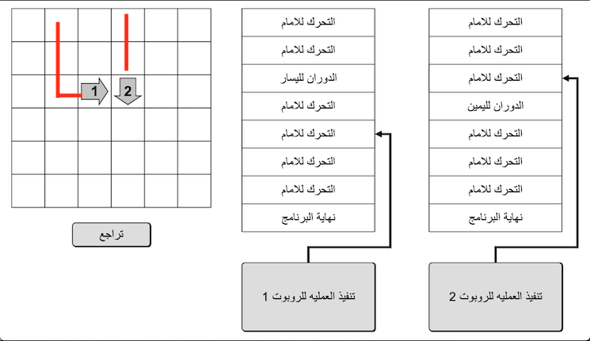
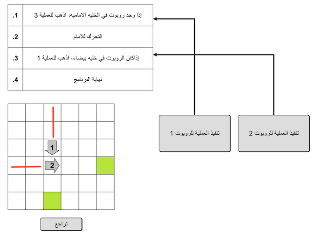
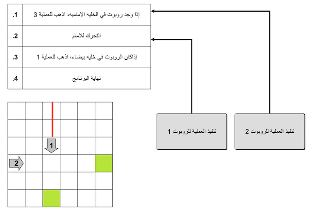
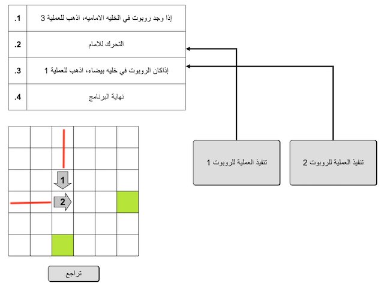
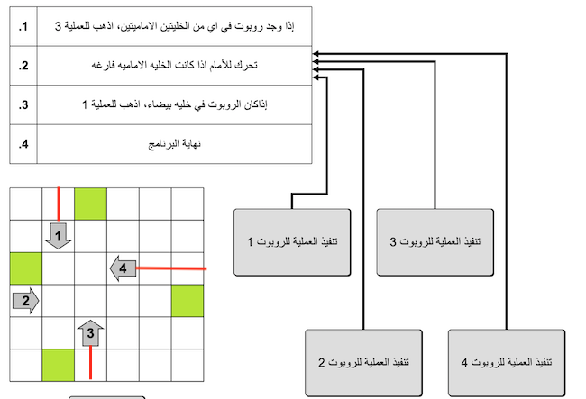

الحل
لا یمكن أن یحدث التصادم بین الروبوت 1 والروبوت 2 إلا عند تقاطع مساراتهما.

نبدأ بتحریك الروبوت 2 حتى نقطة الاصطدام . ثم ننقل الروبوت 1 حتى یصطدم بالروبوت 2.

الخلاصة، لحل المسالة، یجب علیك تنفيذ عمليات الروبوتات علي هذا النحو : 1، 1، 1، 1، 2، 2، 1.
إذا أحضرنا الروبوت رقم 2 أولا إلى نقطة تصادم الروبوتین، ثم تقدم الروبوت 1، فسیتم تعلیق هذا الروبوت أمام الروبوت 2 ولن یتحرك للأمام. حیث تشیر التعلیمات الموجودة في العملية 1 إلى أنه في حالة وجود روبوت أمامه، انتقل إلى العملية 3، ویعود تنفیذ العملية 3 إلى العملية 1..

لذلك یجب علینا المضي قدًما بشكل مختلف. أحضر أولا الروبوت 1 إلى نقطة التصادم. ننفذ تعلیمات العملية 1 في وقت لا يحتوي فيه الروبوت 1 على شيء أمامه. لذلك، فإن الروبوت 1 جاهز لأداء العملية 2، والتي تتكون من المضي قدًما دون طرح أي أسئلة

یمكننا بعد ذلك إحضار الروبوت 2 عند نقطة التصادم، ثم إجراء عملية للروبوت 1 من أجل دفعه إلى الروبوت 2.

الخلاصة، لحل المساله ، یجب أن تنقر بالتتابع على الأزرار: 1، 1، 1، 1، 1، 1، 1، 2، 2، 2، 2، 2، 1.
لحصار الروبوتات، یجب علیك وضع جمیع الروبوتات في موضع یبعد فقط مربع واحد عن الموضع الذي سیعلقون فیه مع
بعضهم، ووضع جمیع برامجهم على العملية 2.
یمكن الوصول إلى هذا الموقف من خلال تنفیذ العدد الصحیح من الخطوات بشكل مستقل لكل روبوت:

من هناك، كل ما علیك فعله هو تنفیذ خطوة واحدة لكل روبوت، و سیصبح جمیعهم عالقون

الخلاصة، لحل المسالة، یجب علیك تنفيذ عمليات الروبوتات علي هذا النحو: 1، 1، 1، 1، 2، 3، 3، 3، 3، 4، 4، 4، 4، 4، 4، 4، 1، 2، 3، 4.
انها المعلوماتیة!